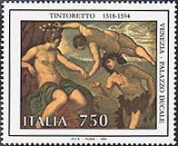
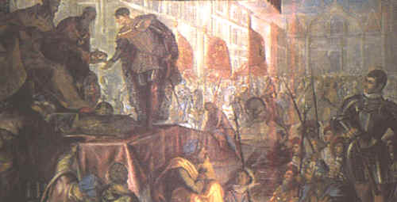
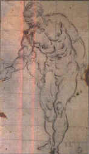

The page of Avram Rudaizky (+ 2001)
Throughout historical time men have used different means for
self-promotion to demonstrate their power, social status and wealth.
Today, as well as in earlier times, such self-promotion took priority to
the historical facts. A splendid example of this is the "Gonzaga-Cycle",
currently displayed at Die Alte Pinakothek in Munich (Germany), painted by
the Italian Renaissance painter Jacobo Tintoretto (1518-1594) on the order
of Guglielmo Gonzaga (1528-1587), the third duke of Mantua between 1558
and 1580, whose family at that time was among the most influential in
Italy.
The
cycle consists of 8 large paintings, each well over 2 x 3 meters, telling
about the rise of the Gonzaga-family beginning in the 15th
century and reaching its peak by the end of the 16th
century.
As well
as these paintings show the self-promotion of the Gonzaga's, they also
show the creativity of Tintoretto's mind by developing new ways of
describing historical- and war events of the time which followed in the
keel water of the Italian renaissance.
The
first painting in the cycle describes how Giovanni Francesco Gonzaga in
1433 was awarded the noble title of Margrave by Emperor Sigismund. History confirms that Giovanni
paid the Emperor not less than 12.000 Fiorini for the right to bear the
title.
|
 |
 |
The Margrave. The painting shows Tintoretto's interpretation of the Investiture in 1433 of Giovanni Francesco Gonzaga as Margrave. The drawing to the right shows how the artist first made a nude study of the slightly stooped Margrave, before he was clad in colours on the canvas.
X-rays
of these paintings reveal the artistic techniques Tintoretto applied in
his works, showing for example that he first made nude studies of his
figures on canvas before he clad them by colours. He applied this
technique throughout his whole career.
"Ludovico II Gonzaga defeats the Venetians on the Adige River,
Legnano, 1439" is the impressive title of the cycle's second painting,
which also proves falsification of history for the benefit of the
glorification of the family.
During his reign Ludovico had no military victories, and this is
why he was painted as the conqueror of a battle won by his father
!
The
painting shown is typical for Tintoretto. He has painted the leading
figures in strong colours, while the rest are blurred out, and painted
nearly only in grey-white, as if he was too lazy to paint them properly,
or even couldn't afford to buy the expensive colour pigments. This was a
new style for his time and was very much criticized by his contemporaries,
but has made the posterity ask the question whether Tintoretto was really
the first modern painter?
Bibliography: Volker Reinhardt, Die grossen Familien Italiens (Kröner Verlag 1992). Exhibition Catalogue from "Jacopo Tintoretto, Der Gonzaga-Zyklus", Alte Pinakothek, München.